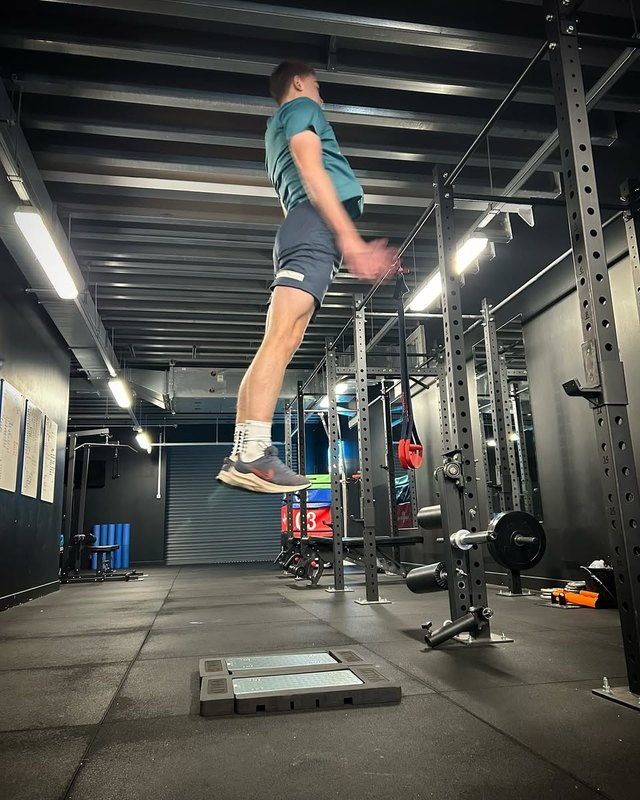
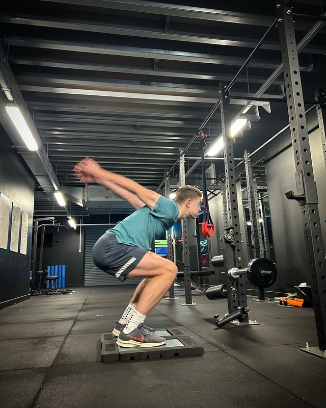

Video
Athletic Testing Footage
PROformance testing sessions filmed for verification. Each clip plays in place.

Jumping
Squat phase
Airborne
Jumping · CMJ, Broad, Hurdles & Box
One compilation covering countermovement jump, broad jump, explosive hurdle work and box jumps. Verified scores: CMJ 60.1cm · Broad Jump 305cm.
 Running · Session 1
Running · Session 1
0.91s5m
1.62s10m
3.89s30m
34km/hTop Speed
Track Sprint · 34 km/h verified across three platforms
Two track sessions captured at sprint intensity. Verified times above — the 34 km/h top speed has been measured and confirmed across three independent platforms: PROformance instrumented treadmill testing, STATSports GPS tracking in match conditions, and PlayerMaker boot-strap data. Same number, three sources.
 Running · Session 2
Running · Session 2